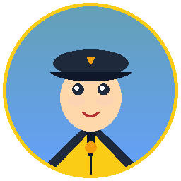
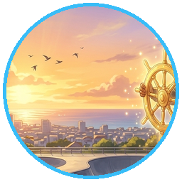

"Halo Kapten Aqlan! Selamat datang di pos lalu lintas kota. Sebelum kamu meluncur dengan skateboard, perhatikan rambu kuning belah ketupat di tiang baja depanmu!"

Hebat sekali Kapten Aqlan! Kamu telah menguasai arti semua rambu lalu lintas, navigasi arah mata angin denah, membedakan paragraf deskripsi vs argumentasi, dan menggunakan awalan 'ber-' dengan sangat cermat!